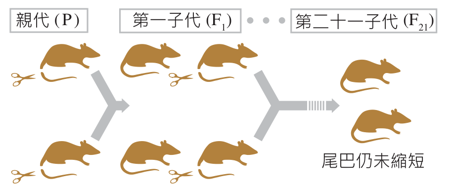

高中生物（全） 3-1 生物的演化
早期演化觀念
3-1.1 早期演化觀念的形成與發展（第 1/12 頁）
3-1.1 早期演化觀念的形成與發展
🌍 單元核心思考引導
地球上形形色色的生命，為什麼是現在這個樣子？不同的生物在地球存活了漫長時間，究竟經歷了哪些「變」與「不變」的歷史歷程？
📜 一、演化理論的發展歷程
| 理論名稱 | 歷史時代 | 代表學者 | 主要觀察與學術立論 |
|---|---|---|---|
| 神創論 | 約西元前 三百年 |
古希臘學者 | 1. 相信水與土能形成生命（無生命物質可轉化為生物）。 2. 認為生物由神創造，每種生物皆完美且永恆不變，稱為 ① 神創論。 |
| 物種不變說 （神創秩序） |
18 世紀初 | 林奈 (Linnaeus) |
1. 堅持所有物種皆為神創，物種絕不改變。 2. 依據生物形態相似性進行階層分類，以彰顯神創萬物的完美秩序。 |
| 演化啟蒙 | 18 世紀末 | 布豐 (Buffon) |
1. 長期研究化石與比較解剖學。 2. 率先提出生物的種類與特徵會隨時間演變，啟蒙後續演化學者。 |
| 用進廢退說 | 19 世紀初 (1809年) |
拉馬克 (Lamarck) |
1. 比對現生物種與化石，首創第一個有系統的生物演化理論。 2. ② 用進廢退說：經常使用的構造會漸趨發達，不常用的退化消失。 3. 獲得性遺傳：為適應環境所產生的後天改變能遺傳給後代。 |
🐁 二、魏斯曼的老鼠剪尾實驗（批判獲得性遺傳）
• 實驗設計：德國生物學家魏斯曼（Weismann）將老鼠尾巴剪斷後進行交配繁殖，連續重複繁衍至 第二十一子代（F21）。
• 實驗結果：每一代新出生的幼鼠尾巴均完整無損，長度完全沒有變短。
• 重要結論：後天環境引起的體細胞改變，無法影響生殖細胞的 DNA，實驗強烈否定了「獲得性遺傳」的概念！後續由達爾文與華萊士提出 ③ 天擇說 取代。
• 實驗結果：每一代新出生的幼鼠尾巴均完整無損，長度完全沒有變短。
• 重要結論：後天環境引起的體細胞改變，無法影響生殖細胞的 DNA，實驗強烈否定了「獲得性遺傳」的概念！後續由達爾文與華萊士提出 ③ 天擇說 取代。

▲ 魏斯曼剪尾實驗：老鼠連續剪尾 21 代，後代尾巴仍未縮短（點擊圖片可放大檢視）